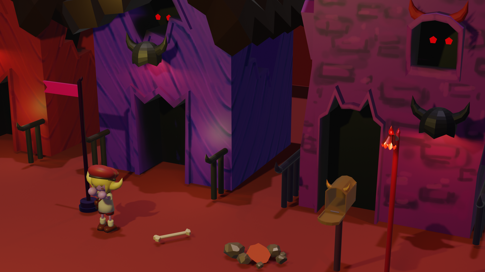
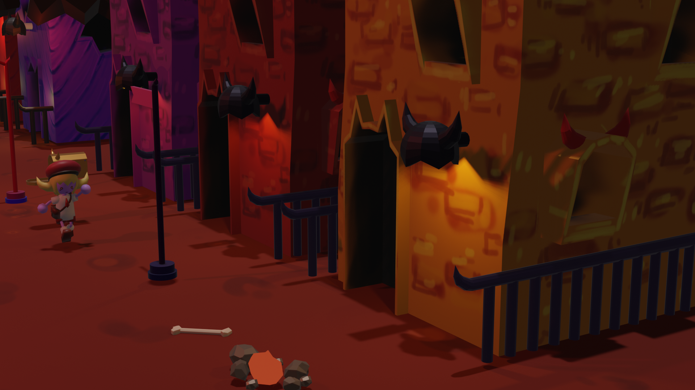

With this project, I mocked up a mail delivery simulator game and was able to explore Blender's capabilities and model low poly objects. With a completed GDD, I created environmental assets as well as the designated player character in Blender.
Hell Mail Express! is a single-player, mail delivery simulator, where both speed and accuracy become your most important assets. You play as the soul of an indentured mail courier tasked with delivering the mail of Hell's devilish and cryptic residents. Overseen by the king of the Underworld himself, dash through the streets of Hell and deliver enough mail before the end of the day - if you just keep your head down and meet your quotas, surely one day you'll earn your way out of eternal damnation.
Drawing from my concept art from the GDD, the style of this "game" was more whimsical, and therefore gave me more freedom to create exaggerated and fantastical structures and shapes for the neighourhood's architecture. Buildings had hand painted textures, and were given different hues to create variety in the assets.
 This character uses a basic rig to pose its limbs, and utilises Blender materials with a texture painted face.